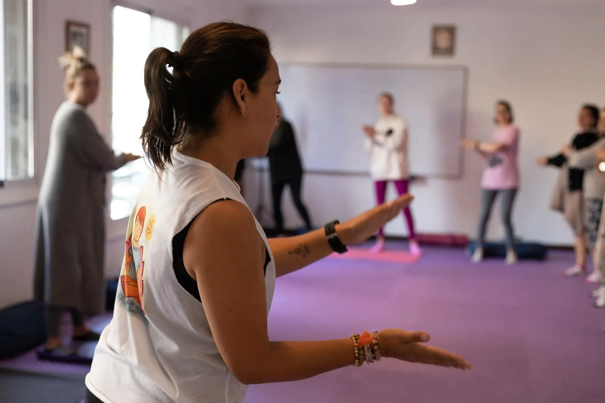

El yoga es una práctica milenaria que ha demostrado ser beneficiosa tanto para el cuerpo como para la mente. Sin embargo, muchas veces se asocia principalmente con adultos. En esta formación de 2 días, queremos cambiar esa perspectiva y mostrar cómo las mujeres pueden empoderarse y compartir esta maravillosa práctica con las infancias.
La formación estará dirigida por instructores experimentados y capacitados en yoga infantil. Aprenderás técnicas y estrategias para adaptar las posturas de yoga a los niños y cómo enseñarlas de manera segura y efectiva. Además, exploraremos cómo el yoga puede ayudar a mejorar la salud física, mental y emocional de los niños.
Pero esta formación no se trata solo de aprender a enseñar yoga a los niños. También se trata de empoderar a las mujeres para que se sientan confiadas y capacitadas para compartir sus habilidades y conocimientos con los demás. El yoga nos enseña a ser presentes, a escuchar nuestros cuerpos y a confiar en nosotros mismos. Estas son habilidades valiosas que podemos compartir con las infancias y ayudarles a cultivar una mente y un cuerpo saludable y equilibrado.
En resumen, esta formación es una oportunidad única para aprender sobre yoga infantil y para empoderar a las mujeres para compartir esta práctica maravillosa con las infancias. Únete a nosotros y descubre cómo puedes ser parte de esta maravillosa misión de ayudar a cultivar una nueva generación de mentes y cuerpos saludables y equilibrados.